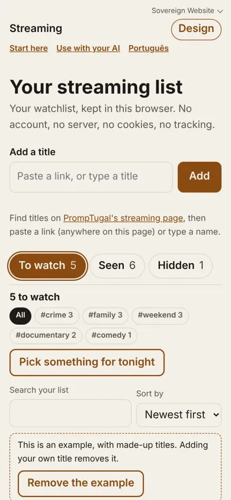
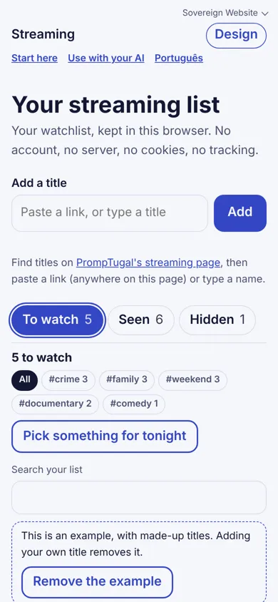
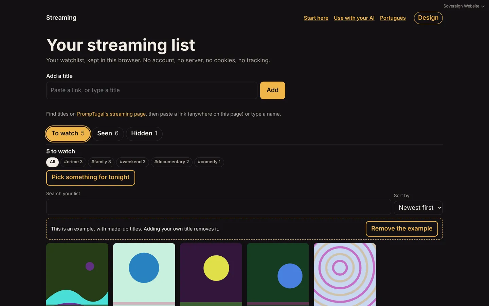

Synthetic users: Streaming, round 4 (short run)
Site: https://streaming.tool.sovereignweb.site/ at 29fa7cd (v0.1.17), kept by streaming.d. Since round 3: a wider shelf and stubs on a desktop, a twelve-title example, second-layer buttons on a filled background, a ring on the selected tab with a count line, and the chooser scrolling inside itself; the first screen is otherwise unchanged. A short run, as design.d offered for changes this small: all five personas, but only The shelf and The queue, with the example list, phone and desktop, light and dark, plus the empty first visit and the chooser. Run: 22 November 2026, 07:02 UTC, by synthetic-users.d, asked for by design.d. Look score: 3.2 (3, 3, 4, 3, 3), level with round 3. Home votes: The queue 3, The shelf 2. Wow: none of the five.
Method: Synthetic users. One subagent per persona, given only the screenshots and the visible text, never the guidelines or design.d's findings. The site's own audience, as design.d set it: someone in the UK or Portugal who watches Netflix, Disney+, Prime Video or Apple TV+ and wants their own watchlist. These are simulations, and never replace the measured checks or a real person.
| Persona | Look | Home | The one change |
|---|---|---|---|
| Phone visitor | 3 | The queue | Put a title, cover or "Up next" card on the first phone screen; tuck filters, search and sort away |
| Small business owner | 3 | The shelf | Fewer buttons on each card, the actions behind a tap |
| Low-vision reader | 4 | The shelf | Card controls (stars, pills, tags) as large as the main buttons |
| Design critic | 3 | The queue | Let each design rebuild the top of the page too; fold search, sort and tags into one bar |
| Streaming viewer | 3 | The queue | Real posters or richer covers, and far fewer buttons per title |
Agreed by all five
- No "wow". The shelf's coloured covers came nearest for two, The shelf in dark for one.
- Too many small buttons on each title: stars, Mark as seen, Hide, Note and tags, Remove, and on The queue also Watch tonight, Move up and Move down. The critic: "button soup".
- "No account, no server, no cookies, no tracking", plain and early, earns trust.
Agreed by three
- The queue's "Up next" card is the clearest idea: one large card answers "what do I watch tonight?", then a numbered list.
- The Shelf shows each title twice, on the cover and under it. Checked in the accessibility tree: a screen reader hears two buttons, both "Record: The Last Pretend Train", one for the cover and one for the title. (The stars are named "1 out of 5" and so on, so the bare star symbols one persona saw in the visible text are not what a screen reader hears.)
- The queue's disabled "Move up" and "Move down" are very faint.
- "PrompTugal", "Sovereign Website" and "Use with your AI" mean nothing to a visitor.
Agreed by two
- On a phone the first screen in both designs is all controls and no titles (the phone visitor and the critic, both naming it the one change).
- The critic: the header, add box, tabs, tags and search are identical in both designs, so the idea only starts below the fold.
- On desktop The shelf leaves gaps: an empty right side, and Preferences and Your data in a narrow column under a wide grid.
- The chooser looked cut off in the full-page screenshot. It now scrolls inside itself, which a still cannot show. In the first-screen still the sheet ends at its own rounded edge, with the next captions clipped there, as a scrolling sheet does.


